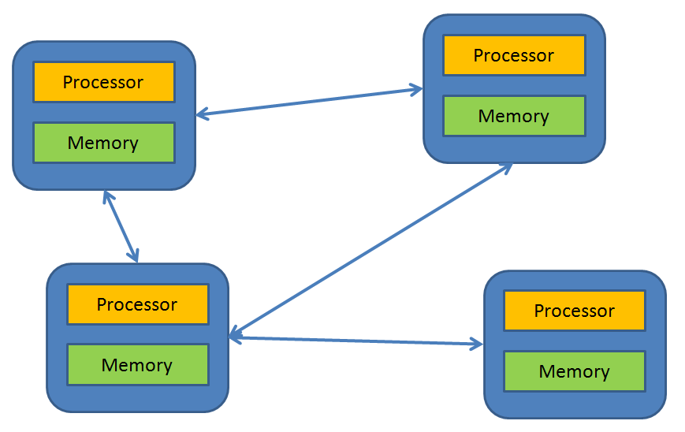
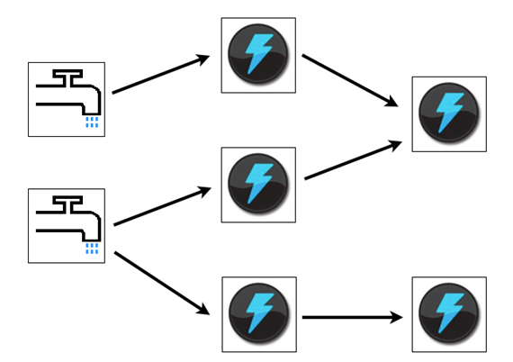
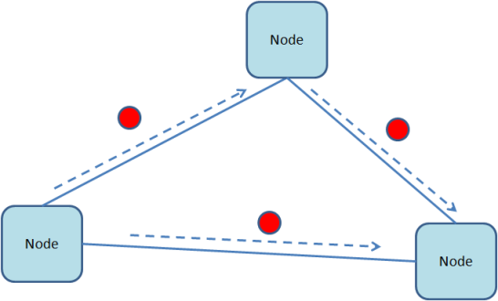

Distributed Applications and Node.js
"My name is Legion; for we are many"
Created by @ajlopez
https://github.com/ajlopez/Talks/NodeDistributedApps
Using reveal.js
Node.js: The next big thing!!
since sliced bread
http://www.toaster.org/slicingbread.htmlSkynet Will Be A Node.js Distributed Application
 http://terminator.wikia.com/wiki/Skynet
http://terminator.wikia.com/wiki/Skynet
Agenda
- Distributed Applications
- Node.js features for distributed applications
- Implementation blocks
- Messaging
- RPC
- Broadcast
- Bus
- ...
- Experiments
Some Notes
Alan Kay
 The deep insights of Alan Kay
The deep insights of Alan Kay
"I thought of objects being like biological cells and/or individual computers on a network, only able to communicate with messages"
The big idea is messaging
Richard Feynman

"If you can't explain it, you don't really understand it."
"What I cannot create, I do not understand."
Try yourself
Michael Faraday

"But still try, for who knows what is possible..."
Do experiments
So, Bring me a Brain, Igor!
Distributed Applications
Questions
- Elements that produce messages?
- Elements that consume messages?
- A message is consumed by only one element?
- Or by many elements?
- A message is consumed locally or remotely?
- How to send a message to other process/machine?
- How to select the remote element?
- Nodes can be added/removed dinamically?
A Typical Sample: Web Crawler
The logical elements can reside in multiple nodes
The Elements
ObjectStream
https://github.com/ajlopez/ObjectStreamObject to JSON and JSON to Object
SimpleMessages
https://github.com/ajlopez/SimpleMessagesBidirectional Message Channels
SimpleRemote
https://github.com/ajlopez/SimpleRemoteRemote Objects with Callbacks
SimpleQueue
https://github.com/ajlopez/SimpleQueueIn-memory in-process queues
The Frameworks
Distributed Actors a la Akka
https://github.com/ajlopez/SimpleActors- Inspired by Akka (Java/Scala)
- Each node has an actor tree
- Each actor can be references by address (host@name/name)
- An actor can create other actors
Spouts and Bolts a la Storm
Storm (Java Project)

- A spout is a source of streams in a computation
- A bolt processes any number of input streams and produces any number of new output streams
Storm in Node
https://github.com/ajlopez/SimpleStorm- Topology by Node
- Inter-node Communication using Queues
Publish and Subscribe
https://github.com/ajlopez/SimpleBus- Publishers and Subscribers
- A message can be received by many targets
- Selective subscription (using a filter)
Fabriq in Node
https://github.com/ajlopez/AjFabriqNode

- Each node has message processors
- Routing of message based on content
- Each node has its own message processors
Demo Experiments
Distributed Genetic Algorithms
Distributed Fractal
Brain and Body
The End?